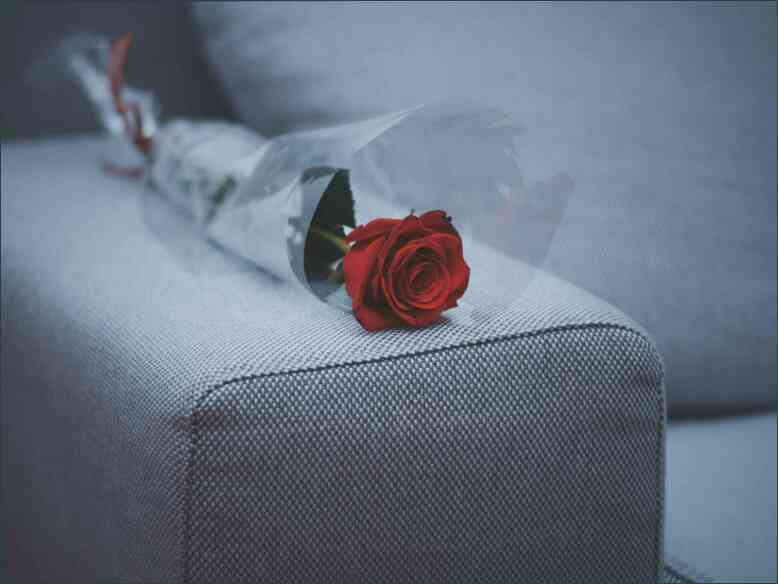

Leneș pizza cu propriile mâini , Uneori, pizza este prea lung și nu vrei să-l gătească în fiecare zi alte. Facem repede o pizza pentru acele vremuri.Principalul lucru este că aluatul este foarte moale. Am împărți în straturi, împărțiți-l în două straturi, se acoperă cu un strat subțire și se coace în cuptor, verificarea nivelului de pregătire cu un meci.Când pizza este gata, se taie în bucăți și se pune pe farfurii răspândit. Sau o poți face într-un cuptor, este mult mai convenabil să o facă în mod deschis testul.Secretul leneș pizza este faptul că este foarte gustos și rapid. Pizza nu ar trebui să ia multă răbdare.Ea poate fi făcută în orice formă.Ofer o pizza rapida la rudele mele pentru masa de prânz. Va trebui să urmați exact:* A4 rotund crusta plăcintă;*10 pizza mari;*100 de ras ziapatk " "Agda;*pizza — tomate;*brânză;*roșu brânză;*ciuperci murate;*sos de pește;*pasta de tomate.Pentru a comanda un de-a gata pizza, veți avea nevoie pentru a furniza ingrediente:aluatul este frământat, marginile sunt rotunjite;capacul din aluat ar trebui să fie pe partea uscată.Am folosit un aragaz lent cu un capac. Pentru a începe cu, aveți nevoie pentru a face o pizza din cauciuc poros hârtie, acest lucru ar trebui să fie în geanta mea. Atunci când este uscat bine cu apă, scoateți hârtie de la ea și scoateți aluatul din aluat complet. În continuare, vom face umplutura. Am folosit alb de smantana. Sos de rosii este aplicat pe partea de sus de pizza. Am amestecat 100 de grame de smantana cu un meci. Pizza ar trebui să rândul său alb și greu. Pentru a preveni lipirea, trebuie să puneți-l pe o farfurie într-un vas plat. Se va face un fundal frumos pe masă. Branza si ciuperci sunt amestecate cu un meci și a pus-o pe o farfurie. Este necesar ca întregul pizza sa fie gros. Puteți face, de asemenea, un strat subțire, a pus câteva brânzeturi pe partea de sus. Există, de asemenea, un nivel scăzut crusta de pizza pentru acest scop. Top cu un strat subtire de spanac tocat. Fiica a plăcut și va face un alt unul pentru seara asta. pizza este gata. Este timpul pentru a apela toată lumea la masă. Au un frumos pofta de mancare! Bucurați-vă de masă")) Și fericit de copt! Citeste mai multe despre cum putem face cărți poștale și pre-rolls.